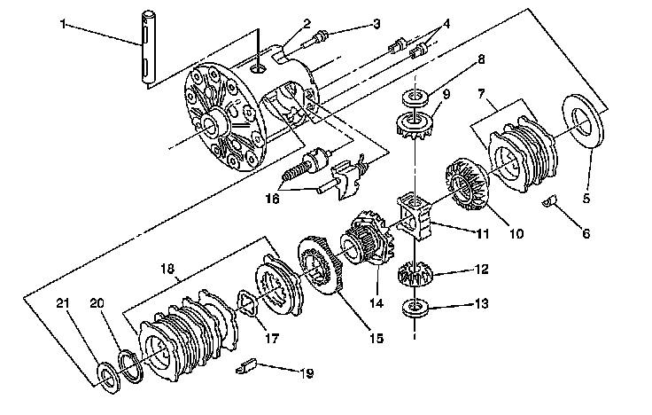
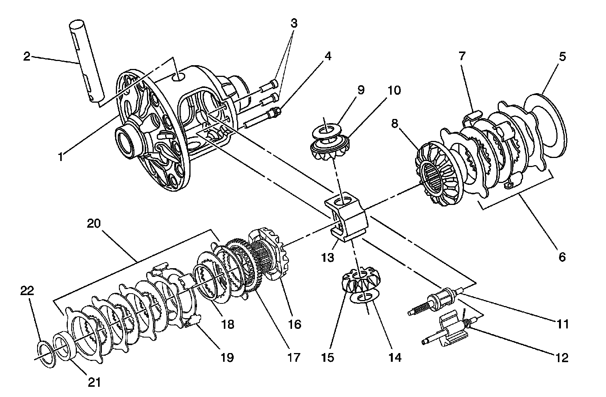

Locking Differential Disassembled Views
Locking Differential Disassembled Views
8.6 Locking Differential:

1 - Differential Pinion Gear Shaft
2 - Differential Case
3 - Differential Pinion Gear Shaft Lock Bolt
4 - Locking Differential Lockout Bushings
5 - Locking Differential Clutch Disc Thrust Washer
6 - Locking Differential Clutch Disc Guide
7 - Locking Differential Clutch Disc Set
8 - Differential Pinion Gear Thrust Washer
9 - Differential Pinion Gear
10 - Locking Differential Side Gear
11 - Locking Differential Thrust Block
12 - Differential Pinion Gear
13 - Differential Pinion Gear Thrust Washer
14 - Locking Differential Side Gear, Cam-Faced
15 - Locking Differential Cam
16 - Locking Differential Governor
17 - Wave Washer
18 - Locking Differential Clutch Disc Set
19 - Locking Differential Clutch Disc Guide
20 - Locking Differential Snap Ring Retainer
21 - Locking Differential Clutch Disc Thrust Washer
9.5 Locking Differential:

1 - Differential Case
2 - Differential Pinion Gear Shaft
3 - Locking Differential Lockout Bushing
4 - Differential Pinion Gear Shaft Lock Bolt
5 - Locking Differential Clutch Disc Thrust Washer
6 - Locking Differential Clutch Disc Set
7 - Locking Differential Clutch Disc Guide
8 - Locking Differential Side Gear
9 - Differential Pinion Gear Thrust Washer
10 - Differential Pinion Gear
11 - Locking Differential Governor
12 - Locking Differential Latching Bracket
13 - Locking Differential Thrust Block
14 - Differential Pinion Gear Thrust Washer
15 - Differential Pinion Gear
16 - Locking Differential Side Gear, Cam-Faced
17 - Locking Differential Cam
18 - Wave Washer
19 - Locking Differential Clutch Disc Guide
20 - Locking Differential Clutch Disc Set
21 - Locking Differential Side Gear Thrust Sleeve
22 - Differential Side Gear Shim